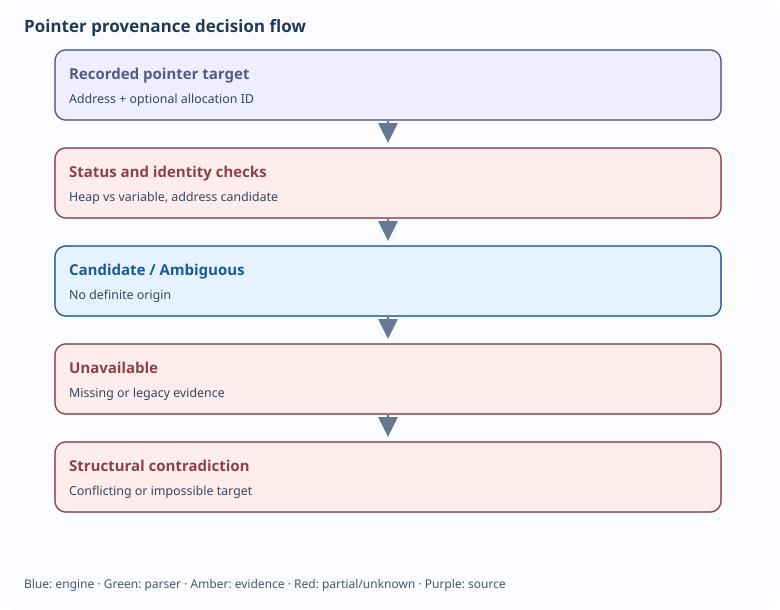
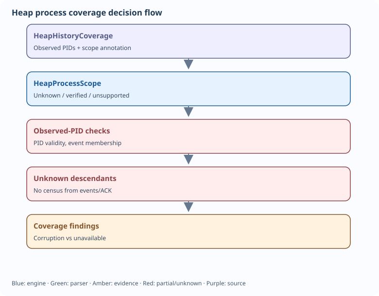

52 · Pointer provenance and process coverage #
Key terms #
| Term | Plain meaning |
|---|---|
| Address containment | The number inside a pointer falls inside the current range of a recorded heap block. It does not tell us how the pointer was obtained. |
| Observed-PID scope | The particular processes that wrote events and whose available event history was checked; it is not a list of every fork descendant. |
>
The big picture #
Two imported claims are especially easy to forge because they look numeric: a pointer target with an allocation ID, and a heap history marked complete. TP-5 and TP8-F01 tightened both. The parser does not infer pointer origin from address containment, and it does not infer a process-tree census from event/ACK records.
Pointer provenance decision table #
validate_pointer_reference receives the variable, an identity map and a finding builder (src/trace_parser/validation.rs:1306-1415). If there is no recorded target, it returns without manufacturing one.
| Recorded target | Finding | Meaning |
|---|---|---|
Heap ID with no provenance_status | POINTER_HEAP_PROVENANCE_UNRECORDED (unavailable) | Legacy metadata; do not infer origin |
| Any allocation ID with a status, or a non-heap definite ID | POINTER_HEAP_PROVENANCE_CONTRADICTORY (corruption) | Numeric/uncertain/freed/unknown evidence cannot claim definite identity |
ID and address_match_allocation_id disagree | POINTER_HEAP_ADDRESS_MISMATCH (corruption) | Two recorded identity claims conflict |
Resolved variable identity empty, unresolved:, or also a heap ID | POINTER_VARIABLE_REFERENCE_INVALID (corruption) | A variable target needs a definite non-heap identity |
| Identity not observed at this checkpoint | POINTER_VARIABLE_REFERENCE_UNRESOLVED (unavailable) | Capture caps/omission, not death |
| All same-identity candidates inactive | POINTER_VARIABLE_REFERENCE_INACTIVE (corruption) | A resolved pointer points only at inactive objects |
| Base + offset does not equal pointer | POINTER_VARIABLE_OFFSET_MISMATCH (corruption) | Arithmetic inconsistency |
| Pointer outside every recorded extent | POINTER_VARIABLE_EXTENT_MISMATCH (corruption) | Address cannot fit any observed object |
A numeric address match is always a candidate. address_only, ambiguous_reuse, known_freed_address and history_incomplete are not promoted to definite origin. A missing status is not blindly treated as corruption either: it becomes unavailable and tells the caller not to infer provenance.
Forged address_only example #
Suppose an imported variable has points_to = "0x1000", target.kind = "heap", target.allocation_id = 7, target.address_match_allocation_id = 7, and no provenance_status. Validation emits POINTER_HEAP_PROVENANCE_UNRECORDED (unavailable). TP-6's PointerEvidence keeps definitive_allocation: None, reports address_candidate: Some(7), and assigns Candidate only for an address-only/known-freed status. It never returns allocation 7 as a definite origin.
If the imported status is address_only but allocation_id is also present, the second row makes it contradictory. The raw pointer record remains available for inspection; the relationship is not accepted.
Heap process scope #
HeapProcessScope is a typed view over the optional HeapHistoryCoverage (src/trace_parser/views.rs:14-42):
Unknown: legacy metadata has no process-scope annotation;VerifiedObservedPidsOnly { observed_event_pids, followed_inferior_pid, observed_history_complete }: the explicit V2.2 scope;Unsupported(other): an imported scope value outside the supported contract.
TraceStore::heap_process_scope() simply parses the recorded annotation (:351-355). It is not itself validation. validate_heap_process_coverage then checks it (src/trace_parser/validation.rs:1839-1930):
Unsupported→HEAP_PROCESS_SCOPE_UNSUPPORTEDcorruption;Unknownplus an unobserved-process annotation →HEAP_PROCESS_SCOPE_UNRECORDEDunavailable;VerifiedObservedPidsOnlywithout an unobserved annotation →HEAP_UNOBSERVED_PROCESS_COVERAGE_UNRECORDEDunavailable;- any unobserved annotation other than
unknown→HEAP_PROCESS_COVERAGE_UNSUPPORTEDcorruption; - PID 0, duplicate observed PIDs, or an event PID absent from the observed list → corruption;
complete = truetogether with sequence gaps, missing events, malformed lines, transport errors, truncation or ID overflow →HEAP_OBSERVED_COVERAGE_CONTRADICTORYcorruption.
Silent-child mutation #
The adversarial example changes unobserved_process_coverage from unknown to all_children_observed while retaining only observed event PIDs and the followed inferior. Validation has no event/ACK evidence for a silent child, so it emits HEAP_PROCESS_COVERAGE_UNSUPPORTED (structural corruption). The history can still be complete for observed PIDs, but that is not a descendant census.
What completeness means #
heap_history.complete is a flag about the verified observed-PID event history. It does not mean:
- every fork child was traced;
- every shared-library allocation was wrapped;
- a missing ACK was invented;
- a dropped snapshot was reconstructed.
execution_status and coverage.complete_for_scope answer a different question about configured user-code recording. A complete heap history and a partial user-code recording can coexist.
Tests #
tests/trace_parser_semantic_tp6.rs covers candidate pointers, forged imports, aliases, crash/gap and unsupported fork claims. tests/trace_parser_realloc_f01.rs covers process scope and sequence gates. examples/trace_parser_tp8_mutate.rs is the preserved mutation probe. These are source-verified tests, not a DOC-3 full-suite rerun.
Diagram notes #
Pointer provenance decision flow #


Process coverage decision flow #

